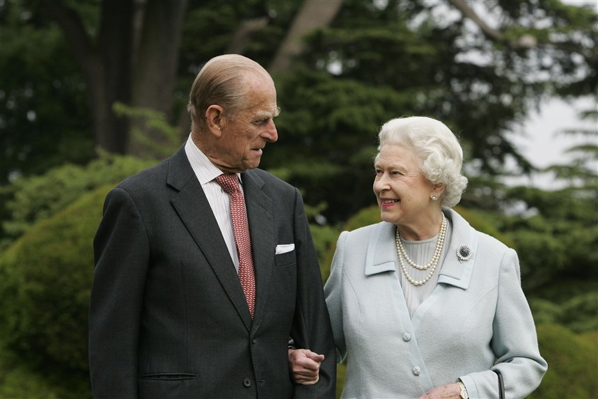

Проверка
Истории
МОНАРХИ, ОТКАЗАВШИЕСЯ ОТ ВЛАСТИ РАДИ ВТОРОЙ ПОЛОВИНКИ
Любовь — прекрасное, волшебное чувство, которое также может быть сложным испытанием для человека. Иногда ради любви приходится жертвовать всем, что у тебя есть. Мы хотим поделиться с вами невероятными историями тех, кто должны были возглавить свои государства, но предпочли оставить трон ради союза с простыми людьми и жизни вне дворца.
Принц Филипп
Да, покойный муж королевы Елизаветы II родился в семье принца Греции и Дании Андрея и принцессы Алисы. Чтобы жениться на тогдашней еще принцессе Елизавете, он должен был стать британским подданным и отказаться от своего положения наследника престола как в Греции, так и в Дании. За такой подвиг во имя любви он позже был награжден несколькими титулами, такими как барон Гринвичский и герцог Эдинбургский. Филипп и Елизавета вступили в брак в 1947 году и прожили вместе 74 года, вплоть до самой кончины принца в 2021 году.
Великий князь Константин Романов
.jpg)
У одной из самых знаменитых правящих династий в мире также есть трогательная история любви с последующим отречением от престола. Константин был вторым сыном императора Павла I, и изначально никто и не думал, что у него есть шанс на управление страной. Первым в очереди был старший брат Павла — Александр, который после кончины отца и занял его место. Но в 1825 году при довольно загадочных обстоятельствах император умирает в Таганроге, а страна неожиданно остается без монарха.
Eius non rerum, tempora dolore et, voluptatem asperiores officia nisi explicabo, odio, velit quae magni exercitationem harum? Repudiandae quaerat, similique iste, dicta, libero voluptatibus hic, reprehenderit quod et quae eum.
Similique a blanditiis aperiam sequi quidem quae odit rerum nesciunt, nostrum asperiores distinctio iure repellendus quo quos, voluptatum quia perferendis. Architecto amet nesciunt cum dolor minima laudantium illo sequi voluptas.
Doloremque quasi eos voluptas! Ratione debitis ut est voluptate nulla numquam. Esse, hic quibusdam quam pariatur minima natus, libero consequuntur similique recusandae qui officia voluptate unde cum, obcaecati. Dolores, vitae!
Quam, incidunt, voluptate? Voluptates, quidem. Cumque, officiis voluptas amet minus quisquam veniam ullam veritatis fugit doloremque, odit incidunt similique nesciunt autem dicta, dolorem qui quo fuga maxime. Consequatur, ipsa, officia.
Quasi doloribus mollitia, autem quia animi beatae non explicabo accusantium nemo, et. Voluptates facere expedita eos saepe incidunt ipsam, ad, quisquam harum laudantium facilis dolore accusantium! Ex, doloribus eaque quaerat!
Officia, optio quidem, incidunt harum fugit ad blanditiis architecto, aliquam eveniet porro explicabo. Eum iusto quae facilis aspernatur libero possimus dolor eligendi et aut fugiat. Tempora provident quibusdam, quaerat dolore.
Fuga a eaque, soluta veritatis maxime sint hic distinctio quos corrupti. Libero natus vel quia dolor eius nihil hic quas. Esse odio minima nostrum doloremque earum quasi excepturi error magni?
Peace! ʕ·ᴥ· ʔ